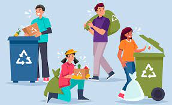

Es el primer paso. Puede parecer evidente, pero andar con bolsas y sin un espacio claro para reciclar puede entorpecer el proceso. Hazte con un sencillo juego de cubos y colócalos de la forma más cómoda para que reciclar no te resulte un esfuerzo extra.
Ten claro qué envase va a cada sitio. A veces, parte de un mismo envase va a diversos contenedores. Por ejemplo: la bandeja de cartón en la que se dipositan los briks de leche va al contenedor azul, mientras que los briks propiamente, al contenedor amarillo. No te olvides de aplanarlos, ya que facilitarás el acceso a su reciclaje.
Es importante que los envases que vayas a reciclar estén limpios, sin restos orgánicos o de otros materiales. Es un pequeño proceso que ayuda a que el reciclaje sea lo más eficiente posible.
Reduce:
No pierdas de vista los productos que consumes y procura reducir (dentro de lo posible) la cantidad de residuos que generas en casa.
Reutiliza:
Casi todo tiene un segundo uso, y cuando lo empiezas a hacer te das cuenta de lo práctico que es. Y tu bolsillo lo notará.
Recicla:
Consigue que todos los residuos que has generado no caigan en saco roto, consigan formar parte de otros productos y limitemos la huella que dejamos en el medio ambiente.
Ahora que las bolsas de plástico cuestan dinero, cada vez más gente las evita. Las alternativas son muchas: bolsas de tela, bolsas reutilizables, carros… Que la mejor opción se adapte a tus necesidades.
Es muy importante tener en cuenta que, antes que vayas a tirar algo (más allá de un envase), puede serle útil a alguien. Regálalo, intercámbialo, dale una nueva vida al objeto que ya no necesitas y sólo usa el contenedor en última instancia. Reciclar y ser responsable con nuestros residuos es la mejor opción para colaborar en la salud de nuestro medio ambiente.